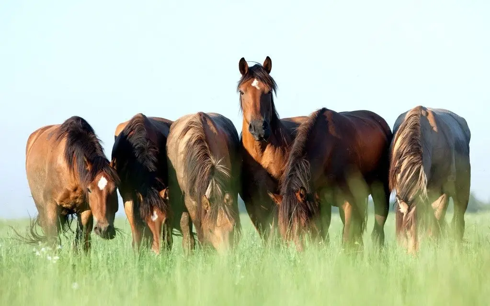

Adoptez votre cheval,
Savourez la relation
Vous aimez la viande mais aussi la nature ?
Chez Char’Adopt, c'est possible !
Adoptez, choyez, et devenez ami avec votre futur repas.
Un lien fort avec votre animal de dégustation n'en rend le goût qu'encore meilleur.

+120
adoptions Satisfaites
+50
éleveurs passionnés
+100%
élevé en plein air
4,8/5
d'adoptants rassasiés (et émus)
Comment ça marche ?
De la prairie à la table, en trois étapes et beaucoup d’amour.
- 1
Choisissez
Race, âge, caractère, petite manie préférée : parcourez les fiches et laissez-vous séduire. Le coup de foudre est fortement conseillé.
- 2
Adoptez
Réservez votre compagnon en ligne, puis suivez sa vie au pré : photos, nouvelles de l’éleveur, galops du dimanche.
- 3
Savourez
Le moment venu, votre viande est préparée par un artisan boucher et livrée chez vous. Servez-la avec une pensée émue et une bonne bouteille.
Ils ont adopté
J’ai appelé mon cheval Gustave. Je lui ai écrit toutes les semaines. Le jour J, j’ai pleuré. Et c’était délicieux.
Enfin une façon de manger de la viande sans culpabilité… ou presque.
Questions fréquentes
Puis-je rendre visite à mon cheval ?
Bien sûr ! Un ami, ça se rend visite.
Et si je m’attache trop ?
C’est le but. Notre service client est formé à l’écoute et aux mouchoirs.
Quand ma viande est-elle livrée ?
Quand votre cheval a atteint sa pleine maturité, en général entre 2 et 4 ans selon la race.
Prêt à rencontrer votre prochain repas ?
Adoptez dès aujourd’hui et commencez une histoire qui se termine bien, surtout pour vos papilles.
Je choisis mon cheval